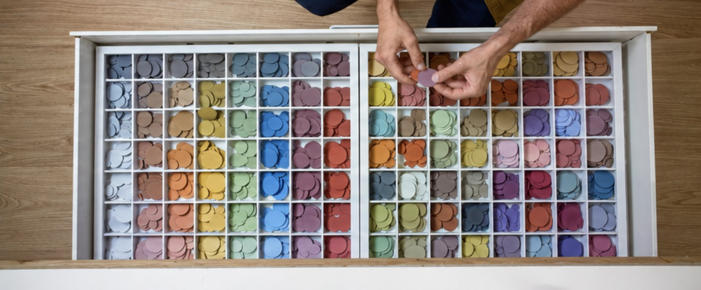
Cinematographer · DOP
Nando de Groot
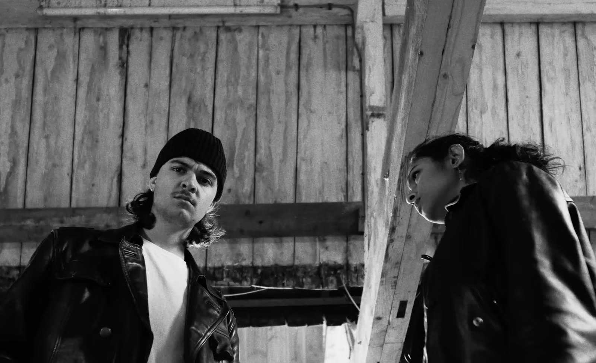
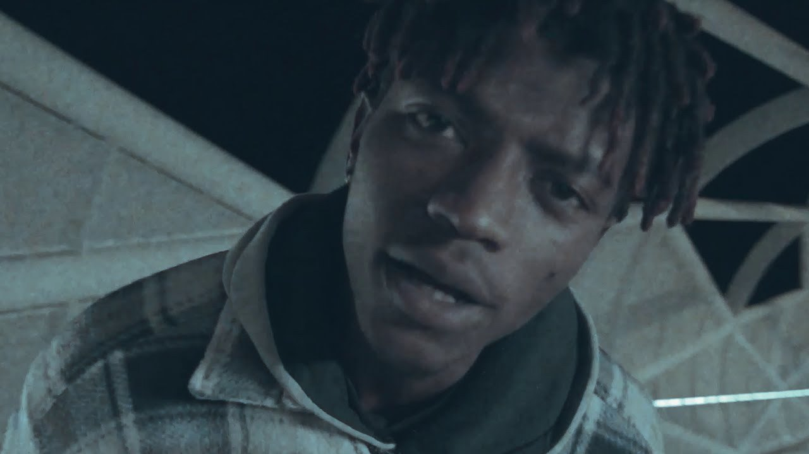
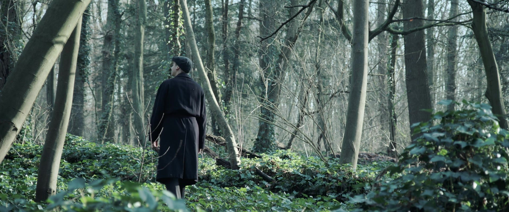
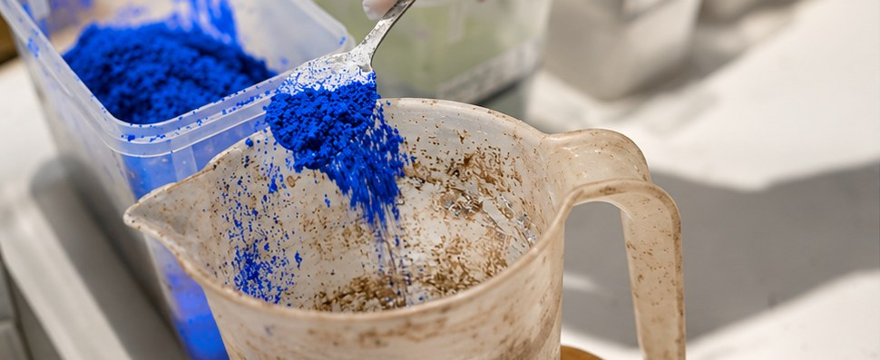
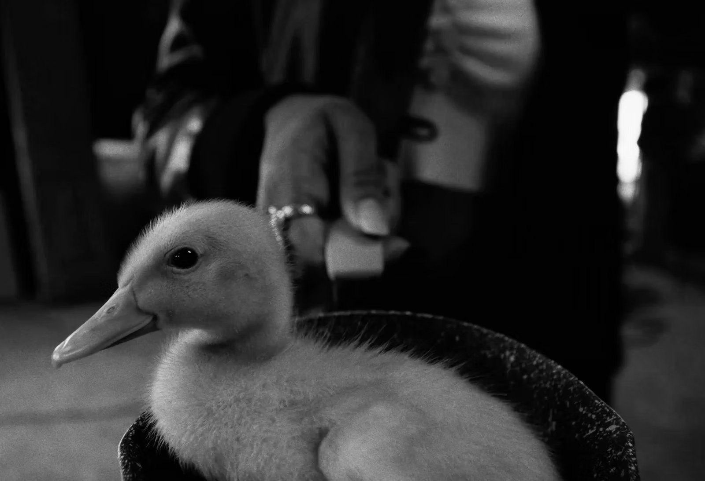
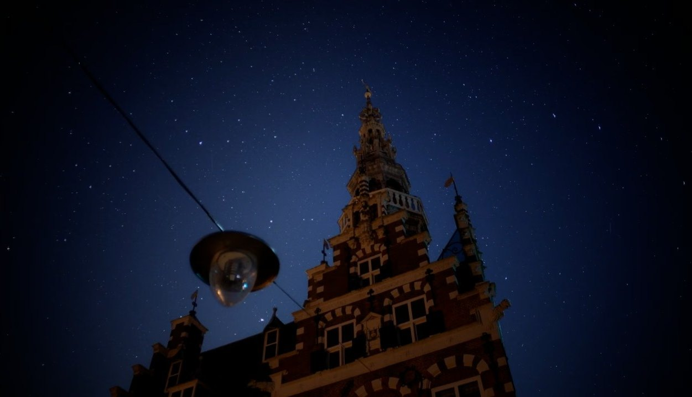
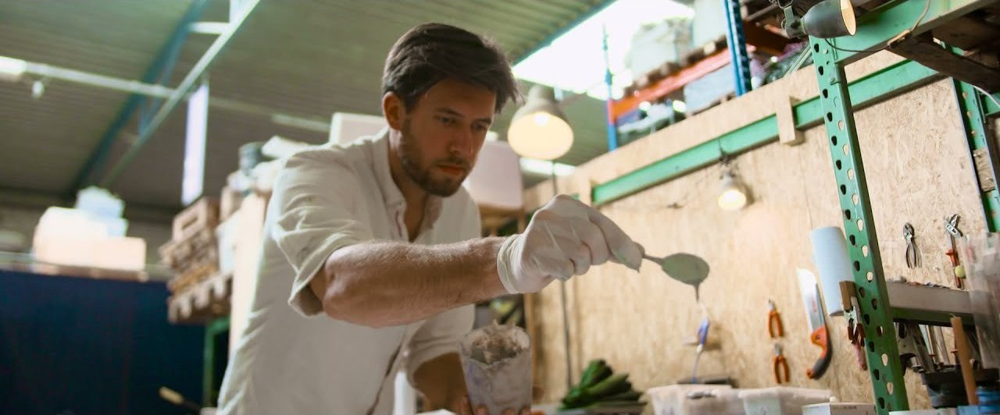
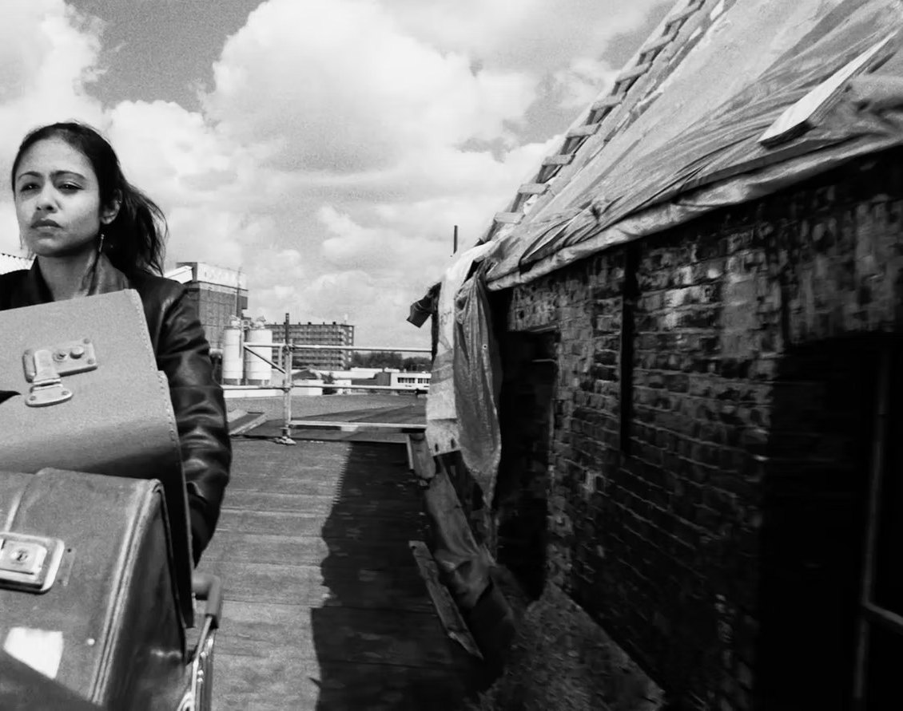
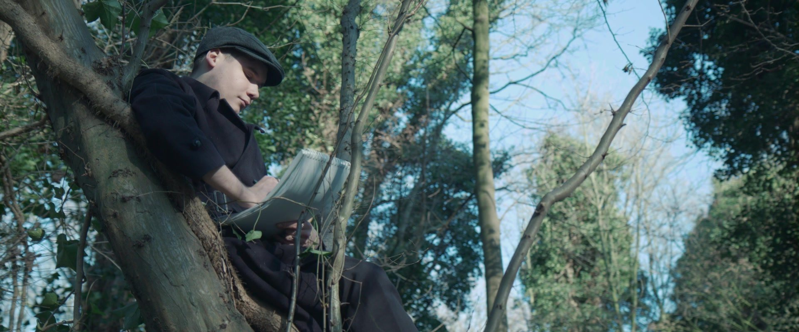
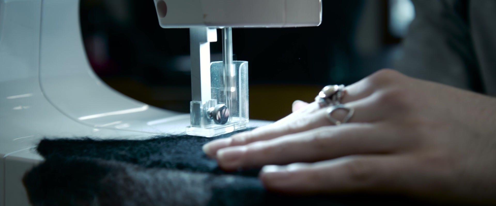
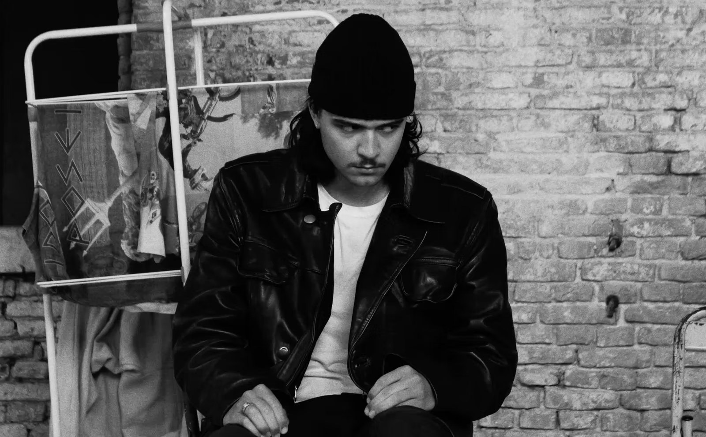
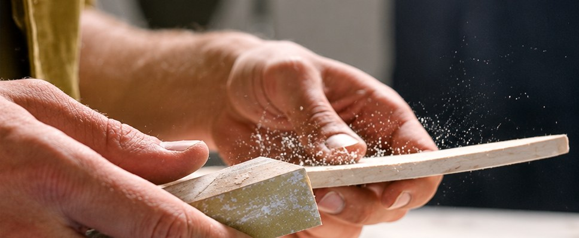
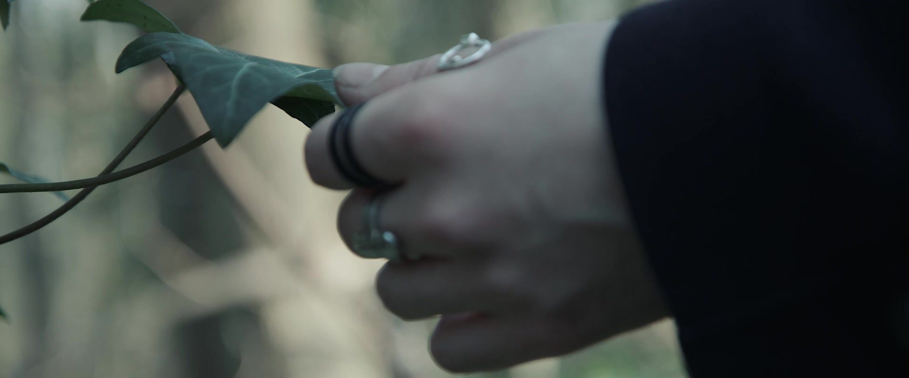
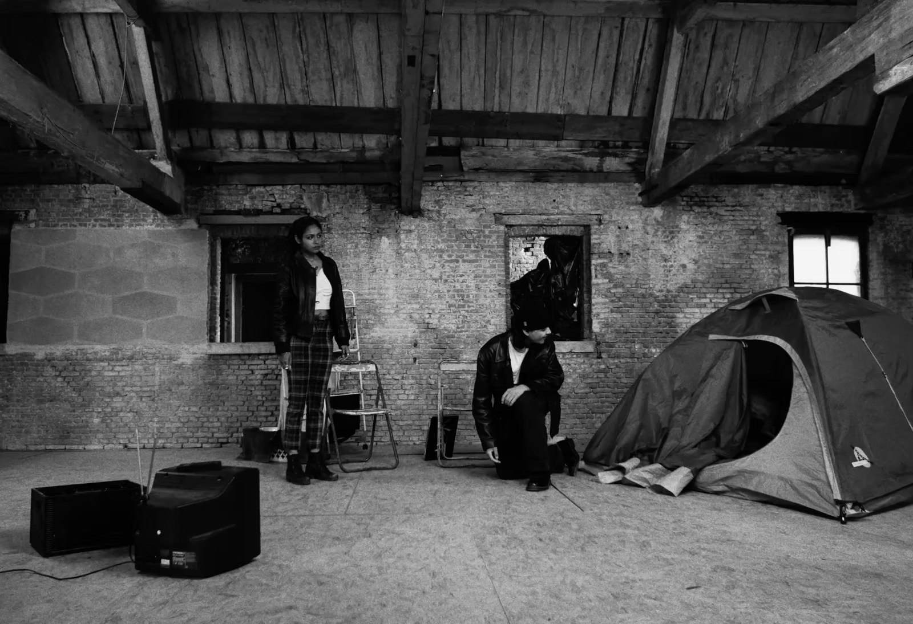
Nando de Groot films people who make things. A graduate of the Willem de Kooning Academie (Audiovisual Design, 2022), he works as a cinematographer, editor and director from Rotterdam, blending authentic storytelling with a hint of social satire. His series about young product designers, from Nikita Zamzam to Madis Ciglis and Iwan Pol, treats the workshop as a film set: dust in the light, pigment falling into a jug, a hand choosing one colour from hundreds. Alongside that he shot for Studio Roosegaarde and AkzoNobel, music videos for Loveth Besamoh and his own short films, moving between ARRI, RED, Sony, Canon, Blackmagic and a Bolex H16 depending on what the story asks for.
Learn More →Signature Traits
- Makers filmed up close: hands, material and process carry the story, as in the product designers series.
- Authentic storytelling with a hint of social satire, in documentaries, portraits and promo films.
- Shot with the cut in mind. As an editor too, every frame is planned for the timeline it ends up in.
- At home on any system: ARRI, RED, Sony, Canon and Blackmagic, and 16mm film on a Bolex H16.
- Colour treated as a subject, not a correction: pigment, paint and skin rendered true.
Major Works
Madis CiglisProduct designers #2
Promo film for the young product designer Madis Ciglis, shot in 2.39:1. From ivy in the woods to ink, colour swatches and the sewing machine: the forest and the workshop cut together as one way of thinking.
IWAN · An IntroductionProduct designers #3
A portrait of Iwan Pol, Dutch product designer and teacher at the Willem de Kooning Academie. Pigment, sanding dust and a drawer full of colour, filmed close enough that the material does the talking.
Seeing StarsStudio Roosegaarde · camera
Camerawork for Daan Roosegaarde’s “Seeing Stars”: a call to switch off the lights and look up again, shot to make the night sky feel like something worth protecting.
Dulux Simply RefreshAkzoNobel · hero TVC
Hero commercial for AkzoNobel. Clean, colour-true images built for a brand that sells colour.
AleatoireShort film · all aspects
A short film about social media addiction, with camera, direction and edit all in one hand.